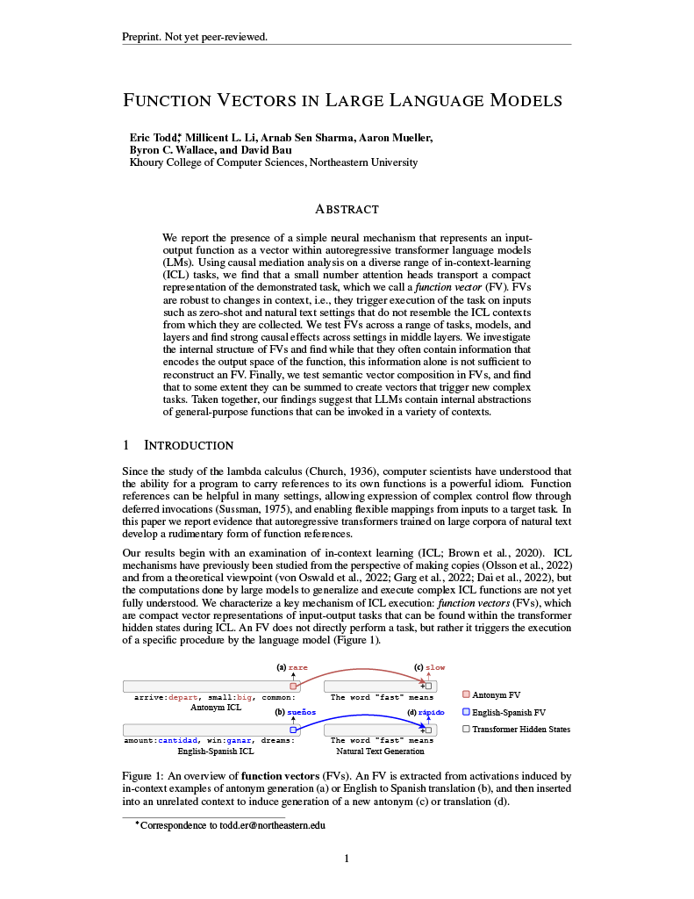
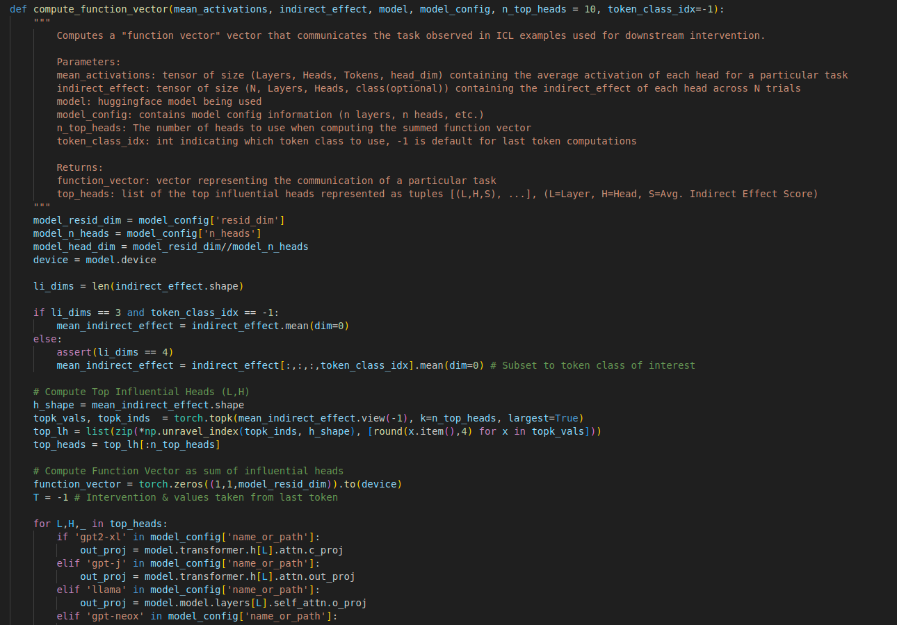
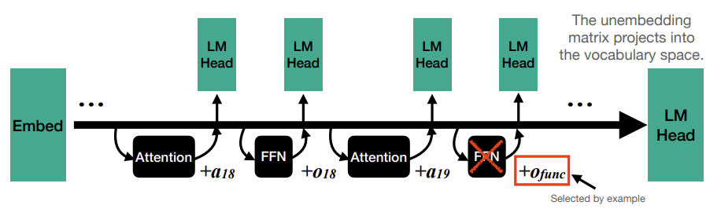
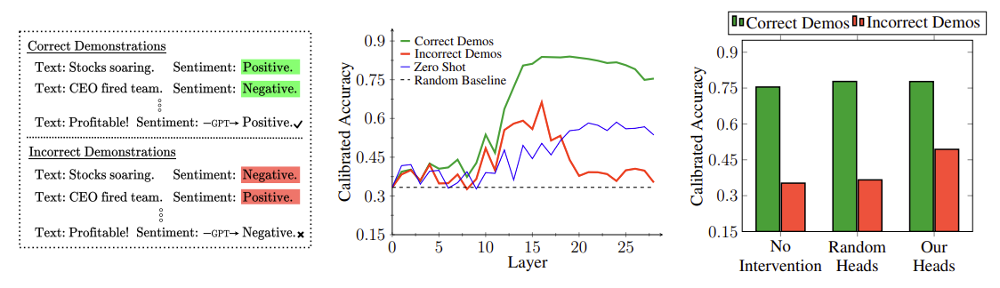
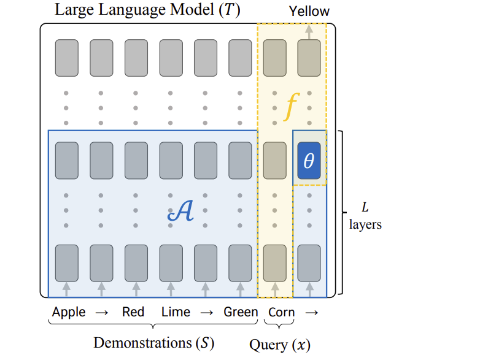

ArXiv
Preprint

Source Code
Data
How Do Language Models Represent Functions?
In this paper, we investigate language models (LMs) as they process in-context learning (ICL) prompts which demonstrate a particular "function" via input-output pairs. We find that LM hidden states contain a compact representation of the demonstrated function, which can be extracted and condensed into a function vector (FV). We show that an FV can be used to trigger the execution of a specific procedure by the language model, and can cause such behavior even in contexts that differ from the original ICL template it is extracted from.
How is a Function Vector Computed?
We use causal mediation analysis to identify a small set of attention heads A, that causally contribute to correctly resolving ICL prompts across a variety of tasks. We create a function vector for an individual task t by summing up the task-conditioned average output of each of these causal attention heads into a single vector vt.(b) A function vector is computed as the sum of the task-conditioned activations of a small set of causal attention heads.
What Can a Function Vector Do?
A function vector (FV) can be added to a language model's computations to trigger a particular behavior in a language model. Though FVs are extracted from templated ICL prompts, we show that they are surprisingly robust to being added into different contexts - including natural text.Can Function Vectors be Composed?
We investigate whether function vectors display semantic vector algebra properties over functional behavior by composing simple functions into more complex ones. We find that fnction vector algebra does compose task-specific information well on many tasks.Related Work
Our work builds upon insights in other work that has examined mechanisms and representations of large transformer language models from several other perspectives:
Jack Merullo, Carsten Eickhoff, Ellie Pavlick. A Mechanism for Solving Relational Tasks in Transformer Language Models. 2023.
Notes: Analyzes the role of components during execution of ICL tasks. Identifies a mechanism implemented in late layers of transformer models that resolves one-to-one relational tasks via a simple linear update.
Danny Halawi, Jean-Stanislas Denain, and Jacob Steinhardt. Overthinking the Truth: Understanding how Language Models Process False Demonstrations. 2023.
Notes: Examines the behavior of attention heads in ICL contexts with false demonstrations present. Identifies and corrects "overthinking" behavior where incorrect information forward is otherwise copied forward from context.
 Nelson Elhage, Neel Nanda, Catherine Olsson, Tom Henighan, Nicholas Joseph, Ben Mann, Amanda Askell, Yuntao Bai, Anna Chen, Tom Conerly, Nova DasSarma, Dawn Drain, Deep Ganguli, Zac Hatfield-Dodds, Danny Hernandez, Andy Jones, Jackson Kernion, Liane Lovitt, Kamal Ndousse, Dario Amodei, Tom Brown, Jack Clark, Jared Kaplan, Sam McCandlish, Chris Olah. A Mathematical Framework for Transformer Circuits. Anthropic 2021.
Nelson Elhage, Neel Nanda, Catherine Olsson, Tom Henighan, Nicholas Joseph, Ben Mann, Amanda Askell, Yuntao Bai, Anna Chen, Tom Conerly, Nova DasSarma, Dawn Drain, Deep Ganguli, Zac Hatfield-Dodds, Danny Hernandez, Andy Jones, Jackson Kernion, Liane Lovitt, Kamal Ndousse, Dario Amodei, Tom Brown, Jack Clark, Jared Kaplan, Sam McCandlish, Chris Olah. A Mathematical Framework for Transformer Circuits. Anthropic 2021.
Notes: Analyzes internal mechanisms of transformer components, developing mathematical tools for understanding patterns of computations. Observes information-copying behavior in self-attention "induction heads" implicated in the strong performance of transformers.
Concurrent Work
Roee Hendel, Mor Geva, Amir Globerson. In-Context Learning Creates Task Vectors. 2023.
Notes: Function vectors have been independently observed in simultaneous work by Hendel et al. (2023), who examine the phenomenon on a different set of models and tasks.
How to cite
This work is not yet peer-reviewed. The preprint can be cited as follows.
bibliography
Eric Todd, Millicent L. Li, Arnab Sen Sharma, Aaron Mueller, Byron C. Wallace, and David Bau. "Function Vectors in Large Language Models" arXiv preprint
bibtex
@article{todd2023function,
title={Function Vectors in Large Language Models},
author={Eric Todd and Millicent L. Li and Arnab Sen Sharma and Aaron Mueller and Byron C. Wallace and David Bau},
year={2023},
eprint={2310.15213},
archivePrefix={arXiv},
primaryClass={cs.CL}
}